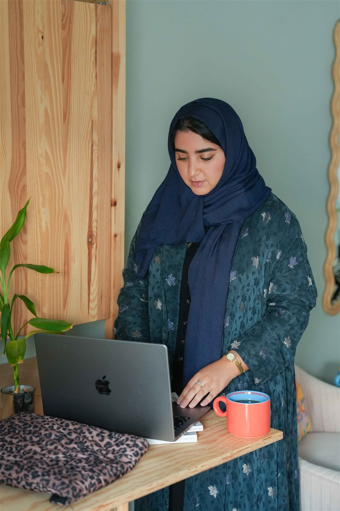

Sara Nagro
Creative
The creative perspective behind the way Noetic is seen and felt, and the visual details that make its world recognisable.
You see a piece you love. Behind it is a shared point of view, a considered choice and a team who cares about the way the experience feels.
Choose a portrait to meet the team.
Renad NagroFounder
Our founder, and part of the shared point of view behind Noetic’s refined, feminine and distinctive world.
The photograph before you leave. The first hello at a gathering. The afternoon that becomes a memory. A piece can belong to all of it, and still feel unmistakably like you.
That is the woman we keep in mind at Noetic. We curate clothing through a lens of refined femininity, considered coverage and distinctive details, for everyday plans as much as the moments you look forward to.

Founder
Noetic is guided by a belief in the confidence that comes from choosing something close to your own style. A graceful silhouette. An expressive detail. A look that feels as personal as the day ahead.
Our founder, Renad Nagro, is part of the point of view behind that world. The invitation is warm and simple: discover the pieces, take a closer look and find what speaks to you.

We look for the balance that makes a whole outfit feel polished: the line of a silhouette, the placement of a detail, the way the pieces come together.
Discover the collectionFeminine style should feel at home in your life. We value graceful movement, thoughtful coverage and a sense of ease, with space for your own way of wearing it.
Find your next pieceAn expressive print. An unexpected accent. A different way to bring a look together. We are drawn to pieces with character, so your choice can feel personal.
Explore a different detail

Co-founder
Co-founder Ibrahim Mousli joins Renad and the team in the story behind Noetic. A shared vision connects the collection with the experience around it, from the first discovery to the questions that help make a choice feel clearer.
Beautiful clothing invites you in. Useful information and a human connection help you take the next step. Both belong in the Noetic world.
Get to know our team
An image that draws you closer. A piece that catches your eye. A question you would rather ask a real person. Meet the people behind these parts of your experience.
Creative
The creative perspective behind the way Noetic is seen and felt, and the visual details that make its world recognisable.
Head of Fashion
A fashion eye on the pieces, silhouettes and combinations that give the collection its character.

Customer Support
A human connection for the things you want to ask, whether you are discovering a piece or understanding your order.
Some days call for ease. Some moments invite a little more presence. Your wardrobe can make room for both, with details that feel personal.
You deserve more than a lovely photograph. Take time with the fabric information, garment measurements and different views of the piece. The details help you imagine it in your own life.
Ask us about a pieceLook closely at the silhouette, finish and coverage. Each piece has its own character; the product information is where to understand it.
Compare garment measurements with a piece you already love wearing. Let your preferences for fit and length guide you.
Review shipping, returns and exchanges before ordering. Our team is here when you have a question.
A little more about our world, and the way to make it your own.
Our point of view is refined, feminine and distinctive. Considered silhouettes, expressive details and thoughtful coverage guide the edit, while your personal style guides the choice.
Yes. Noetic’s world includes everyday plans, outings, gatherings and meaningful moments. Occasionwear is one part of the collection, alongside pieces for the rest of your life.
Explore the product images, fabric information and garment measurements, then ask our team about the details you want to understand. For eligibility and next steps after ordering, check the current returns and exchange policy.
There is a whole life waiting beyond the wardrobe. Find something you would love to take into yours, and reach out whenever you want a little clarity.